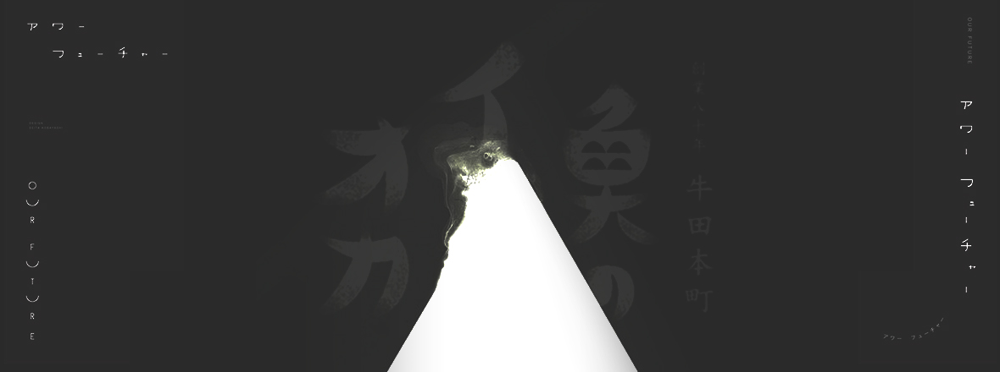

网站建设文化传播有限公司
Website construction culture Communication Co., Ltd.
关于我们
Skidmore, Owings & Merrill LLP是世界上最大、最具影响力的建筑、室内设计、工程和城市规划事务所之一。自1936年创立以来,本事务所已在逾50个国家完成了10,000多个项目。我们的声誉源自我们缔造的标志性建筑，以及对卓越设计创新和可持续性的不懈追求。
我们的工作方式
合作实践的主导动力，因为我们认为最佳的结果源自与所有利益相关者的持续沟通。我们将客户视为合作伙伴，并将每个项目看作一项独特的挑战。我们的综合事务所汇聚了建筑、内饰、工程和城市规划领域的专家，共同打造创新的解决方案。
我们的杰作
我们的作品集包括20世纪和21世纪最重要的建筑设计，从尖端的研究设施和启发性的学习中心，到摩天大厦以及充满活力的都市地区应有尽有。我们已荣获近2,000个奖项，并且是唯一一家两度荣获美国建筑师协会建筑事务所奖的事务所。
COPYRIGHT (©) 2017 mo004_813 平面设计类型网站